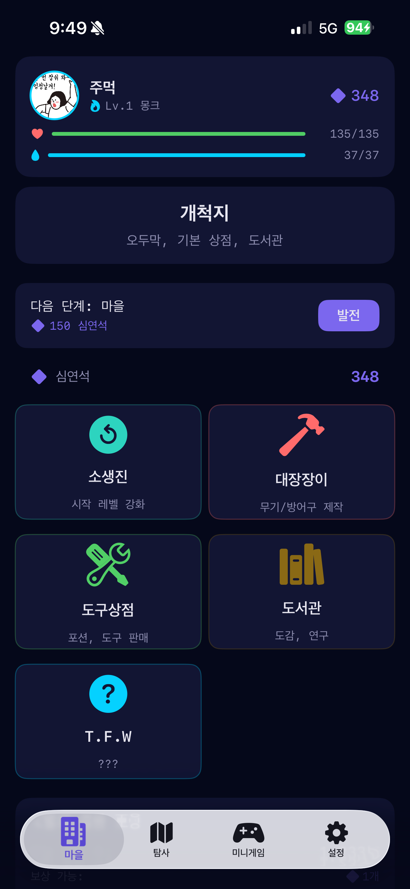
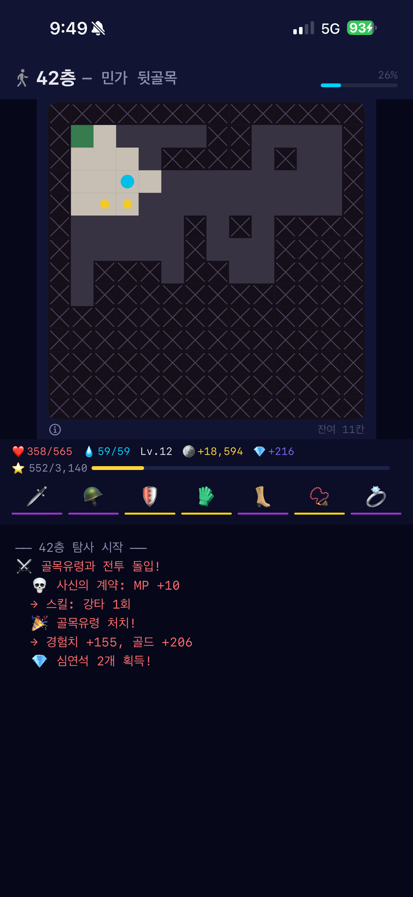
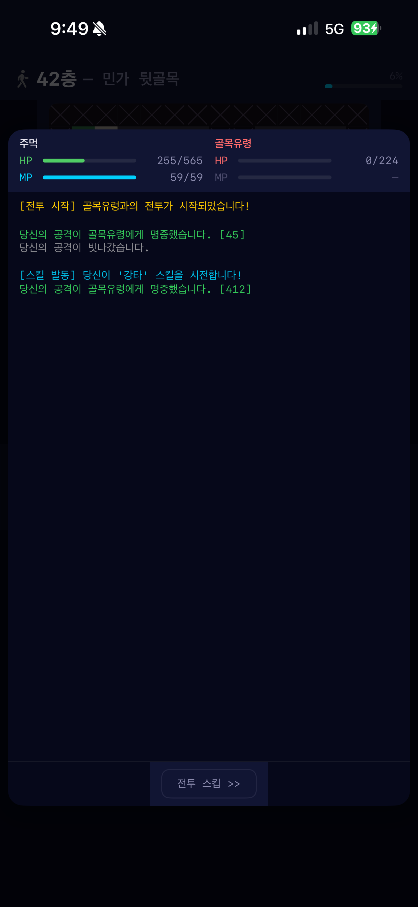
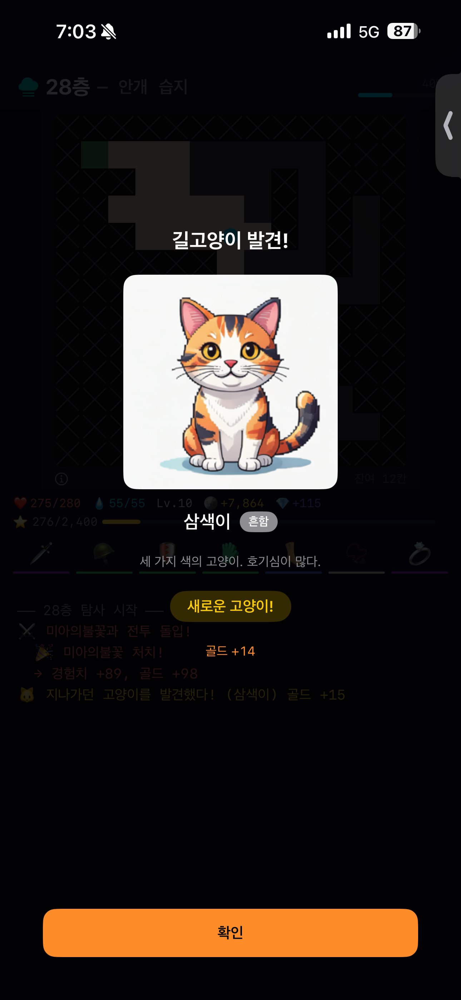

잊혀진 도시 애클립시아의 심연을 한 층씩 탐사하는 텍스트 기반 던전 게임. 한 손으로 가볍게 돌아오면서, 4회차에 걸친 단서·엔딩·도감의 깊이는 진지하게 챙겼습니다.
몽크·로그·매직유저 3직업. 스킬·장비·소생진 강화로 빌드를 짜고, 자동 진행되는 전투를 지켜보며 다음 한 수를 고민하세요.
1~50층 → 51~100층 → 강화 회차 → 붉은 심연. 회차마다 새로운 지역·보스·서사가 풀립니다.
탐사 중 모은 단서가 봉인의 진실을 향합니다. 봉인할지, 거부할지 — 당신의 선택이 다음 회차를 바꿉니다.
도서관·신체강화·지도 제작소·대장간 등 마을 시설을 발전시켜 다음 탐사를 유리하게.
고양이 도감과 연동되는 운명의 카드 + 보스 러시. 한 달 단위 호흡으로 즐기는 도전 콘텐츠.




iPhone iOS 18.0 이상 / 무료 (인앱 후원 옵션 있음)